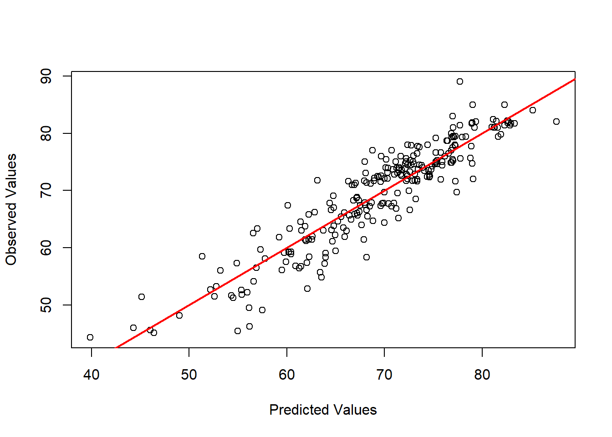

library(tidyverse)
library(tidymodels)Rozwiązanie zadania regresyjnego
Rozwiązanie zadania regresyjnego
Rozwiązanie zadania zaczynamy od wczytania niezbędnych bibliotek
Wczytujemy dane i sprawdzamy jak wyglądają
data <- read_csv("life_expectancy.csv")New names:
Rows: 2938 Columns: 20
── Column specification
──────────────────────────────────────────────────────── Delimiter: "," dbl
(20): ...1, Life.expectancy, Adult.Mortality, infant.deaths, Alcohol, pe...
ℹ Use `spec()` to retrieve the full column specification for this data. ℹ
Specify the column types or set `show_col_types = FALSE` to quiet this message.
• `` -> `...1`head(data)# A tibble: 6 × 20
...1 Life.exp…¹ Adult…² infan…³ Alcohol perce…⁴ Hepat…⁵ Measles BMI under…⁶
<dbl> <dbl> <dbl> <dbl> <dbl> <dbl> <dbl> <dbl> <dbl> <dbl>
1 1 65 263 62 0.01 71.3 65 1154 19.1 83
2 2 59.9 271 64 0.01 73.5 62 492 18.6 86
3 3 59.9 268 66 0.01 73.2 64 430 18.1 89
4 4 59.5 272 69 0.01 78.2 67 2787 17.6 93
5 5 59.2 275 71 0.01 7.10 68 3013 17.2 97
6 6 58.8 279 74 0.01 79.7 66 1989 16.7 102
# … with 10 more variables: Polio <dbl>, Total.expenditure <dbl>,
# Diphtheria <dbl>, HIV.AIDS <dbl>, GDP <dbl>, Population <dbl>,
# thinness..1.19.years <dbl>, thinness.5.9.years <dbl>,
# Income.composition.of.resources <dbl>, Schooling <dbl>, and abbreviated
# variable names ¹Life.expectancy, ²Adult.Mortality, ³infant.deaths,
# ⁴percentage.expenditure, ⁵Hepatitis.B, ⁶under.five.deathsnrow(data)[1] 2938Usuwamy pierwszą kolumnę, ponieważ to po prostu kolumna z indeksem, która nam się niepotrzebnie wczytała
data <- data[,-1]Sprawdźmy sobie podstawowe informacje o naszych zmiennych
summary(data) Life.expectancy Adult.Mortality infant.deaths Alcohol
Min. :36.30 Min. : 1.0 Min. : 0.0 Min. : 0.0100
1st Qu.:63.10 1st Qu.: 74.0 1st Qu.: 0.0 1st Qu.: 0.8775
Median :72.10 Median :144.0 Median : 3.0 Median : 3.7550
Mean :69.22 Mean :164.8 Mean : 30.3 Mean : 4.6029
3rd Qu.:75.70 3rd Qu.:228.0 3rd Qu.: 22.0 3rd Qu.: 7.7025
Max. :89.00 Max. :723.0 Max. :1800.0 Max. :17.8700
NA's :10 NA's :10 NA's :194
percentage.expenditure Hepatitis.B Measles BMI
Min. : 0.000 Min. : 1.00 Min. : 0.0 Min. : 1.00
1st Qu.: 4.685 1st Qu.:77.00 1st Qu.: 0.0 1st Qu.:19.30
Median : 64.913 Median :92.00 Median : 17.0 Median :43.50
Mean : 738.251 Mean :80.94 Mean : 2419.6 Mean :38.32
3rd Qu.: 441.534 3rd Qu.:97.00 3rd Qu.: 360.2 3rd Qu.:56.20
Max. :19479.912 Max. :99.00 Max. :212183.0 Max. :87.30
NA's :553 NA's :34
under.five.deaths Polio Total.expenditure Diphtheria
Min. : 0.00 Min. : 3.00 Min. : 0.370 Min. : 2.00
1st Qu.: 0.00 1st Qu.:78.00 1st Qu.: 4.260 1st Qu.:78.00
Median : 4.00 Median :93.00 Median : 5.755 Median :93.00
Mean : 42.04 Mean :82.55 Mean : 5.938 Mean :82.32
3rd Qu.: 28.00 3rd Qu.:97.00 3rd Qu.: 7.492 3rd Qu.:97.00
Max. :2500.00 Max. :99.00 Max. :17.600 Max. :99.00
NA's :19 NA's :226 NA's :19
HIV.AIDS GDP Population thinness..1.19.years
Min. : 0.100 Min. : 1.68 Min. :3.400e+01 Min. : 0.10
1st Qu.: 0.100 1st Qu.: 463.94 1st Qu.:1.958e+05 1st Qu.: 1.60
Median : 0.100 Median : 1766.95 Median :1.387e+06 Median : 3.30
Mean : 1.742 Mean : 7483.16 Mean :1.275e+07 Mean : 4.84
3rd Qu.: 0.800 3rd Qu.: 5910.81 3rd Qu.:7.420e+06 3rd Qu.: 7.20
Max. :50.600 Max. :119172.74 Max. :1.294e+09 Max. :27.70
NA's :448 NA's :652 NA's :34
thinness.5.9.years Income.composition.of.resources Schooling
Min. : 0.10 Min. :0.0000 Min. : 0.00
1st Qu.: 1.50 1st Qu.:0.4930 1st Qu.:10.10
Median : 3.30 Median :0.6770 Median :12.30
Mean : 4.87 Mean :0.6276 Mean :11.99
3rd Qu.: 7.20 3rd Qu.:0.7790 3rd Qu.:14.30
Max. :28.60 Max. :0.9480 Max. :20.70
NA's :34 NA's :167 NA's :163 BMI wynoszące 1 na pewno nas powinno zaniepokoić i powinniśmy rozważyć usunięcie takich podejrzanych wartości, ale w tym przypadku idziemy dalej i sprawdzamy czy występują braki danych
apply(data, 2, function(x) any(is.na(x))) Life.expectancy Adult.Mortality
TRUE TRUE
infant.deaths Alcohol
FALSE TRUE
percentage.expenditure Hepatitis.B
FALSE TRUE
Measles BMI
FALSE TRUE
under.five.deaths Polio
FALSE TRUE
Total.expenditure Diphtheria
TRUE TRUE
HIV.AIDS GDP
FALSE TRUE
Population thinness..1.19.years
TRUE TRUE
thinness.5.9.years Income.composition.of.resources
TRUE TRUE
Schooling
TRUE Tak, występują, sprawdźmy ile
data %>%
is.na() %>%
summary() Life.expectancy Adult.Mortality infant.deaths Alcohol
Mode :logical Mode :logical Mode :logical Mode :logical
FALSE:2928 FALSE:2928 FALSE:2938 FALSE:2744
TRUE :10 TRUE :10 TRUE :194
percentage.expenditure Hepatitis.B Measles BMI
Mode :logical Mode :logical Mode :logical Mode :logical
FALSE:2938 FALSE:2385 FALSE:2938 FALSE:2904
TRUE :553 TRUE :34
under.five.deaths Polio Total.expenditure Diphtheria
Mode :logical Mode :logical Mode :logical Mode :logical
FALSE:2938 FALSE:2919 FALSE:2712 FALSE:2919
TRUE :19 TRUE :226 TRUE :19
HIV.AIDS GDP Population thinness..1.19.years
Mode :logical Mode :logical Mode :logical Mode :logical
FALSE:2938 FALSE:2490 FALSE:2286 FALSE:2904
TRUE :448 TRUE :652 TRUE :34
thinness.5.9.years Income.composition.of.resources Schooling
Mode :logical Mode :logical Mode :logical
FALSE:2904 FALSE:2771 FALSE:2775
TRUE :34 TRUE :167 TRUE :163 Liczba true oznacza ile braków mamy dla danej kolumny
Mamy wiele braków danych, nie powinniście ich usuwać, tylko zastanowić się nad metodą uzupełnienia ich (najprościej - medianą, trochę ciekawiej, pewnie lepiej - Random Forest, KNN). Mimo wszystko w tym rozwiązaniu usuniemy braki.
data <- drop_na(data)nrow(data)[1] 1649Utraciliśmy bardzo dużo informacji - dlatego nie powinniśmy byli usuwać obserwacji z brakami. Teraz przejdźmy do modelowania. Wczytałem tidymodels do podziału zbioru uczącego (moglibyśmy też w nim modelować, ale to na trzecim spotkaniu).
set.seed(14)
data_split <- initial_split(data, 0.85)
train_data <- training(data_split)
test_data <- testing(data_split)
mod <- lm(Life.expectancy~., data=train_data)
summary(mod)
Call:
lm(formula = Life.expectancy ~ ., data = train_data)
Residuals:
Min 1Q Median 3Q Max
-17.2668 -2.0851 0.0174 2.1693 12.0131
Coefficients:
Estimate Std. Error t value Pr(>|t|)
(Intercept) 5.396e+01 8.116e-01 66.480 < 2e-16 ***
Adult.Mortality -1.751e-02 1.056e-03 -16.589 < 2e-16 ***
infant.deaths 8.966e-02 1.137e-02 7.888 6.17e-15 ***
Alcohol -6.879e-02 3.338e-02 -2.061 0.0395 *
percentage.expenditure 3.449e-04 2.145e-04 1.608 0.1080
Hepatitis.B -2.499e-03 4.899e-03 -0.510 0.6100
Measles -1.217e-05 1.160e-05 -1.049 0.2945
BMI 3.226e-02 6.572e-03 4.908 1.03e-06 ***
under.five.deaths -6.703e-02 8.267e-03 -8.108 1.13e-15 ***
Polio 8.516e-03 5.749e-03 1.481 0.1387
Total.expenditure 4.909e-02 4.389e-02 1.118 0.2636
Diphtheria 8.643e-03 6.562e-03 1.317 0.1880
HIV.AIDS -4.217e-01 2.021e-02 -20.869 < 2e-16 ***
GDP 2.363e-05 3.490e-05 0.677 0.4985
Population -9.101e-10 1.808e-09 -0.503 0.6148
thinness..1.19.years -2.815e-02 5.730e-02 -0.491 0.6233
thinness.5.9.years -5.483e-02 5.667e-02 -0.968 0.3334
Income.composition.of.resources 9.887e+00 8.980e-01 11.011 < 2e-16 ***
Schooling 8.700e-01 6.441e-02 13.507 < 2e-16 ***
---
Signif. codes: 0 '***' 0.001 '**' 0.01 '*' 0.05 '.' 0.1 ' ' 1
Residual standard error: 3.616 on 1382 degrees of freedom
Multiple R-squared: 0.8307, Adjusted R-squared: 0.8285
F-statistic: 376.8 on 18 and 1382 DF, p-value: < 2.2e-16Gdybyśmy modelowali w celu wnioskowania, prawdopodobnie szukalibyśmy modelu, którego wszystkie zmienne byłyby istotne. Ponieważ chcemy zbudować model, który służy tylko do predykcji to nie będziemy sprawdzać założeń, ani szukać modelu, w którym wszystkie zmienne są istotne statystycznie. Otrzymaliśmy R^2 na poziomie 0.8285 i RSE 3.6, co wydaje się być w porządku wynikiem.
Teraz zróbmy sobie predykcję na zbiorze testowym
pred <- predict(mod, test_data)
pred_df <- cbind(test_data, pred)Policzmy sobie RMSE
rmse(data= pred_df, truth = Life.expectancy, estimate = pred)# A tibble: 1 × 3
.metric .estimator .estimate
<chr> <chr> <dbl>
1 rmse standard 3.51Narysujmy predicted vs real values
plot(pred_df$pred, # Draw plot using Base R
pred_df$Life.expectancy,
xlab = "Predicted Values",
ylab = "Observed Values")
abline(a = 0, # Add straight line
b = 1,
col = "red",
lwd = 2)